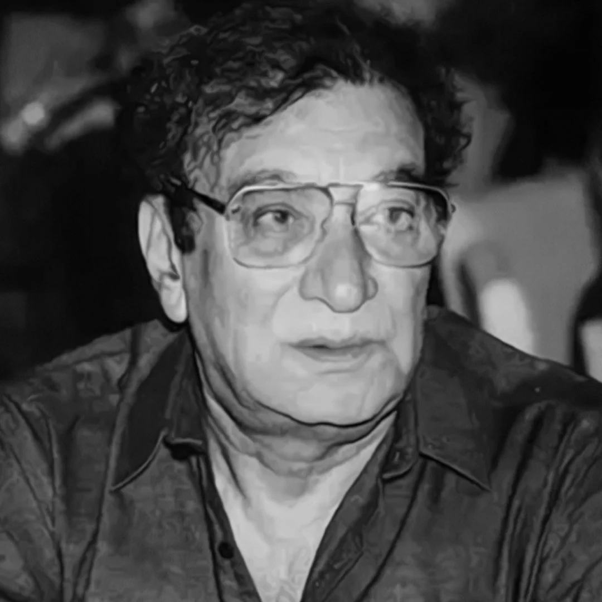

4. Ahmed Faraz
Known for his romanticism and heartfelt poetry.

रंजिश ही सही, दिल ही दुखाने के लिए आ
आ फिर से मुझे छोड़ जाने के लिए आ
तुझे भूलने की कोशिश नाकाम रही
हर दर्द में बस तेरा ही नाम रहा
सुना है लोग उसे आँख भर के देखते हैं
सो उसके शहर में कुछ दिन ठहर के देखते हैं
उसका हर लम्हा नज़रों में उतर आता है
हर रोज़ दिल उसे फिर से सोचता है
अब के हम बिछड़े तो शायद कभी ख्वाबों में मिलें
जिस तरह सूखे हुए फूल किताबों में मिलें
वक्त गुजर गया यादों का सिलसिला रहा
मोहब्बत दफ्न हुई मगर मक़बरा रहा
शिक़ायत तो बहुत है मगर कौन सुनेगा
मोहब्बत की कहानी है, मोहब्बत की जुबानी है
कोई समझे न समझे, दिल ने कही
तेरी याद हमेशा मेरे साथ रही
तेरा शहर कितना पुराना लगा
तेरा चेहरा कितना अजनबी था
भीड़ में तन्हा सा खड़ा रहा
वक्त का रिश्ता हमेशा अधूरा लगा
वो जो शख्स यहाँ से उठा था
वो अब भी मेरा इंतजार करता है
उसका ठहरना, जाना याद आता है
लंबे इंतज़ार के बाद सन्नाटा सा रहता है
कुछ न कहो, कुछ भी न कहो
क्या कहने से बात बनेगी
खामोशी की आवाज़ सुनना जरूरी है
कभी चुप्पी में भी दास्तां छुपी होती है